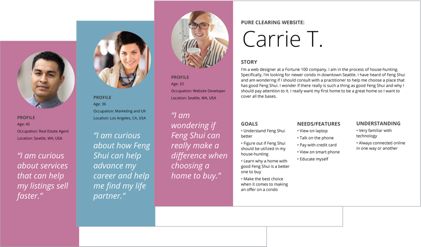
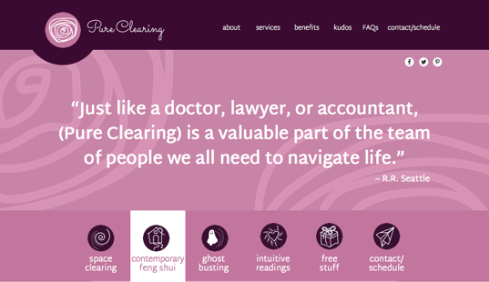
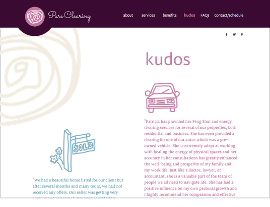
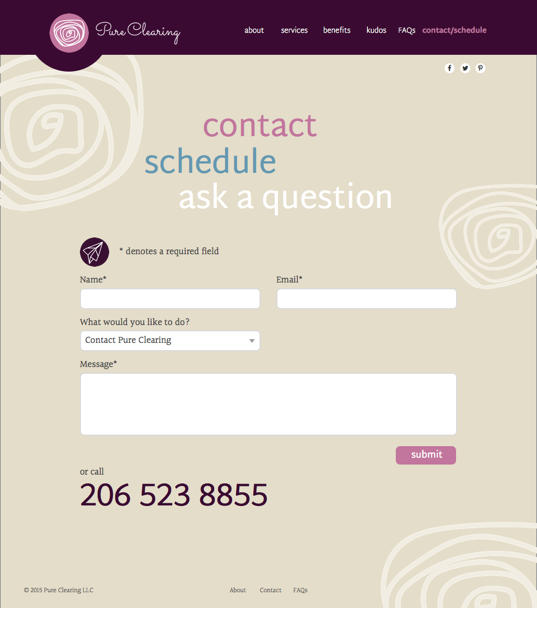

Pure Clearing privides contemporary Feng Shui, space clearing, ghost-busting, and intuitive services to homeowners and business owners.
Brand Development
One of the biggest challenges for this type of business is communicate credibility.In doing research on other people in this type of business much of the competition had identities that seemed very new agey. The competition often had dated websites, or the sites were not mobile friendly. Some of the sites provided too much to read. Pure Clearing needed to be simple, approachable, and friendly while educating the user in a light-hearted manner.
Personas
I used Google Docs to create a user survey and gathered data that helped me to develop likely customers for Pure Clearing. I created personas based on the survey data and finalized those personas in Illustrator.
Rough Wireframes
I started with some very rough sketches before going to Low Fidelity Wireframes.

User Flows
Somme of the user flows I created using draw.io..
Iconongraphy
Illustrations
In keeping with the goal of presenting a simple, approachable, and friendly brand, I created loose and light-hearted illustrations to support the copy.
High Fidelity Wireframes
On the home page I used a client’s testimonial to convey credibility early in the user’s experience. The iconographic menu helps add personality. The icons are more fun to look at than plain words. Using a color palette of deep burgundy, pinks, medium blues, and warm tan helps to keep the content natural and personable.
  If I had more time I would finess the illustrations further and do some extensive user testing. This website is a work in progress so these items can be addressed because we know that digital work is never really done. More content will be added - a blog, the free gifts, more testimonials,FAQs, and the much-needed social links along with an online scheduler so that users can make appointments without the back and forth of email and/or phone calls, if that’s their preference.